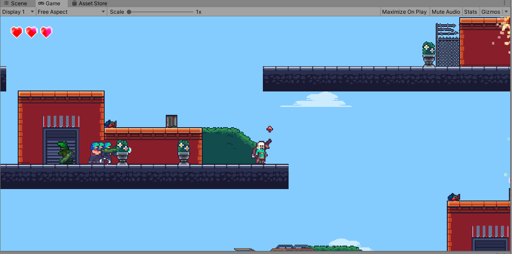
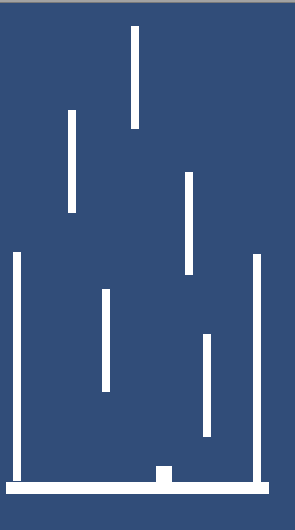

Desenvolvimento indie:
Olá! Bem vindo(a) a minha pagina, me chamo Fabricio Oliveira, graduando em Sistemas de informação, amante de jogos e aspirante a desenvolvedor indie. Já explorei diversas Game Engines como Godot, Unreal e Unity sendo a última a que mais utilizo, devido a curva de aprendizagem e familiaridade com a linguagem utilizada pelo motor chamada C sharp. Normalmente eu prefiro trabalhar no código do jogo, desenvolvendo toda a logíca, mas como desenvolvedor indie você não tem esse previlégio de trabalhar somente em uma área, como desenvolvedor indie você desenvolve a lógica, cuida do Desing e ainda do négocio como divulgação e publicação. É muito gratificante trabalhar com desenvolvimento de jogos em qualquer uma das áreas.
Ainda não cheguei a publicar os meus projetos porém estou a caminho de publicar meu primeiro jogo. Um jogo minimalista para Mobile, é um projeto simples, porém estou me dedicando em todas áreas que citei, para adiquirir expêriencia e melhorar minhas habilidades. O projeto ainda está na fase de prototipagem porém a mecanica do jogo está bem fluida, estou gostando do resultado obtido até o momomento. Veja abaixo alguns de meus projetos.
A imagem abaixo é de um projeto de um curso que fiz de desenvolvimento 2d da Domestika, é um curso completo que aborda vários tópicos. O Projeto é de um jogo de plataforma simples, que conta com inimigos que nascem em pontos do mapa, você precisa eliminar o maior numero de inimigos usando sua espada.
A proxima imagem é do projeto que estou trabalhando, a arte do jogo ainda não está pronta estou utilizando as foras primitivas da Unity, o objeto é ir saltando sobre as plataformas sem deixar o player cair o mais longe possivel.
Obrigado por ter lido até aqui, em breve publicarei novas postagens e falarei sobre cada projeto com link para download para vocês testarem hahaha. Qualquer duvida, critica ou sugestão deixe abaixo, um abraço e até mais.